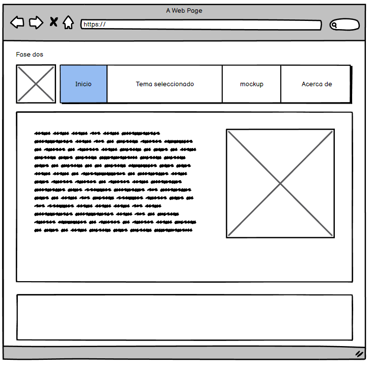

En esta sección hablaremos sobre la importancia de las media queries para el desarrollo de paginas web, ya que en la actualidad se han vuelto muy necesaria, ya que por medio de estas podemos adaptar cualquier pagina web a distintos dispositivos y pantallas.

En el desarrollo web las media queries juegan un papel importante, ya que por medio se de estas se forman las bases de design responsive, lo cual se refiere a la adaptación de nuestra pagina web en los distintos dispositivos o pantallas

En 1994 se planteó implementar las media queries en la primera versión de CSS, esta se implemento en los navegadores en el año 2012 junto a la llegada de CSS3. Desde el inicio se buscaba hallar la manera de que el contenido creado en HTML se pudiera visualizar de forma correcta en las distintas pantallas con diferentes resoluciones, esto con el fin de trabajar en la perspectiva que tenía el usuario final o cliente, con la llegada de pantallas con mejores resoluciones y el uso de dispositivos antiguos por varios usuarios, lograron impulsar mas esa necesidad de adaptabilidad en las páginas. En el año 2012 con la llegada de las media queries y la estandarización de la misma, las paginas web lograron dicha adaptabilidad en diferentes tipos de dispositivos con diferentes resoluciones.
En CSS3 se puede agregar valores con el fin de elegir el tipo de medio al que se dirige la regla en una media query.
Las funciones de medios nos permiten usar las características en los distintos navegadores o dispositivos, a continuación, veremos algunas de estas características.
Media Queries tipo screen usando funciones width y heigth.

funcion Orientación

En esta seccion se mostrara el Mockup de la pagina web, el cual fue realizado por medio de la aplicación balasamiq.
Pagina Realizada por Brayan Camargo
Universidad Nacional Abierta y a Distancia